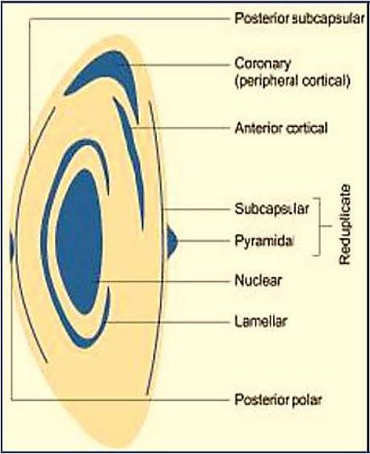

Cataract · Congenital & Developmental
Clinical Picture and Complications
Clinical picture
Symptoms:
- Asymptomatic if the cataract is small and not affecting vision.
- White color of the pupil if the cataract is extensive or superficial “Leukocoria”.
- Defective vision if the cataract interferes with vision.
Signs:
- Steps of lens examination are: V.A (if possible), oblique illumination, slit lamp and red reflex.
Complications
- If small and not interfering with vision: no complications.
- If large and interfering with good vision:
- 1) Defective vision will interfere with the mental development.
- 2) Interference with the development of the macula functionally with sensory deprivation amblyopia which in return will lead to:
- Squint in unilateral cases.
- Nystagmus in bilateral and extensive cases.
